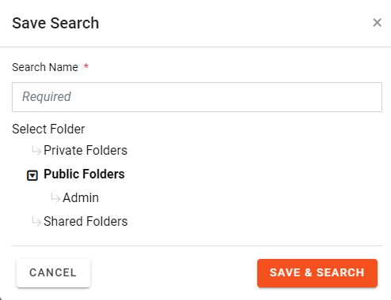
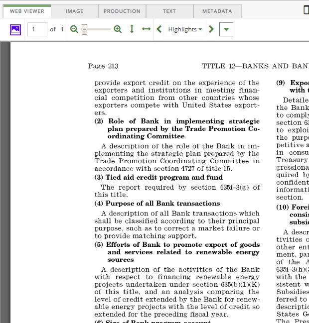

To run and/or save a Quick Search in the Visual Search tab or the Advanced Search tab:
-
After reviewing your search definition in the Visual Search tab or Advanced Search tab, complete either step 2 or step 3.
-
To run the search without saving it, click
 .
. -
To save the search:
-
Click
 .
.
- Enter a unique name in the Search Name field.
-
Select the folder in which the search should be stored. If the folder does not exist, create it as explained in
-
Click to save and run your search.
-
-
To save the search without running it, click
 .
. - If you run the search, evaluate the outcome in the Results tab.
- To view details for a specific document, click the document link. The Document Viewer opens.
-

Note: If no results exist for the tab, the tab will be blank.

You can view the image by clicking different tabs of the Document Viewer, Web Viewer, Production (if available), Image, Text or Metadata tabs.
 or press Enter.
or press Enter.